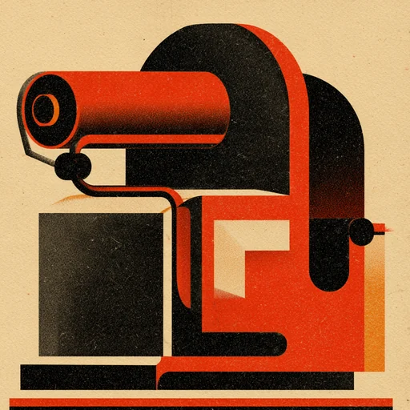

An idea by Carlo, written by Claude, based on PierG's Daily Brief newsletterEvery morning · every Sunday · About (IT) · Italiano


The AI papersArtificial intelligence news printed like posters: a daily every morning, a considered weekly every Sunday.